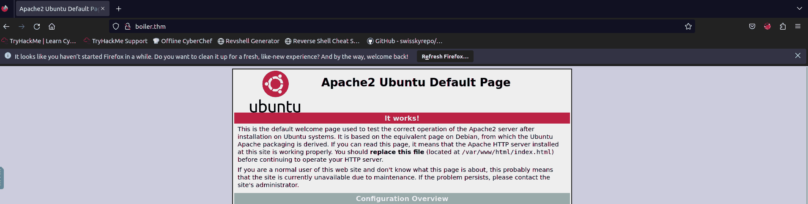
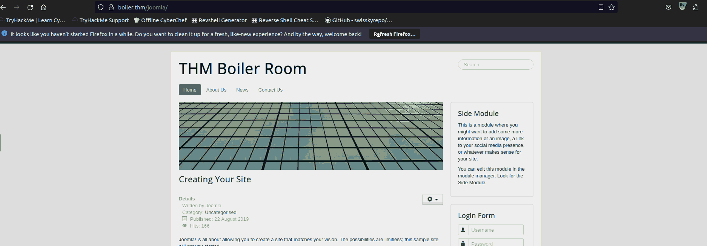

THM: Boiler CTF
Table of Contents
Intro
After giving attacktive directory a try, and barely surviving, I went
back to completing walkthrough rooms, striving to complete the Junior
Pentester path before Christmass. This was my … break from these rooms.
Making it a habit to edit etc/hosts before starting any CTF, to ensure
that I won’t keep going back and forth to remember the machine’s IP
has been really helpful!
Recon
The ordinary initial nmap scan gives us some basic starting info:
IP=boiler.thm nmap -sV -sC -oN nmap.initial $IP
There are 3 open (tcp) ports, all of which are interesting:
[ ]21: ftp, allowing anonymous login[ ]80: An apache web server[ ]10000: A strange MiniServ 1.930 service, which I’ll look into later
Before moving on, like always, I started a full scan as well, just to be safe:
nmap -p- -oN nmap.full -T4 $IP
Enumerating the ftp server
After logging in the ftp server as anonymous, I only had to run ls -a,
(since plain ls did not list any files and pwd told me that I’m in /),
to see a hidden file, which I then moved to my machine and checked
out:
Whfg jnagrq gb frr vs lbh svaq vg. Yby. Erzrzore: Rahzrengvba vf gur xrl!
It is encrypted, but not in any formats I have gotten used to, but I figured it would not be very difficult to find (it seemed like a 1to1 map). It was actually the first technique I tried: ROT13
Just wanted to see if you find it. Lol. Remember: Enumeration is the key!
With that said, after also checking for exploits in the FTP server’s version, I do not think that there is anything else here.
Analyzing the web server
I am getting pretty comfortable checking webpages out, so I was disappointed seeing just the default Apache2 Homepage.

Figure 1: Sad
However, seeing that there were disallowed entries in robots.txt
(http-robots.txt was executed among the default scripts by nmap), I figured
that I should check it out. There were a lot of entries there1,
but after visiting them, they were not of any interest (the
files/directories did not exist).
There was, a little bit encoded string following, that I had to check.
079 084 108 105 077 068 089 050 077 071 078 107 079 084 086 104 090 071 086 104 077 122 073 051 089 122 085 048 077 084 103 121 089 109 070 104 078 084 069 049 079 068 081 075
Seeing that everything consisted of 3 digits, all of which lower than 122, I thought that it may be a weird way to depict a string, using its ascii characters:
def convert_to_ascii(input_string): integers = input_string.split() ascii_chars = [chr(int(num)) for num in integers] return ''.join(ascii_chars) input_string = input("Enter space-separated integers: ") result = convert_to_ascii(input_string) print("ASCII representation:", result)
The output was just barely more promising than what we started with, and hash-id does not give me reason to believe its a hash (of any kind)
OTliMDY2MGNkOTVhZGVhMzI3YzU0MTgyYmFhNTE1ODQK
(It was actually not used at all)
I, then, ran
gobuster dir -w /usr/share/wordlists/SecLists/Discovery/Web-Content/big.txt -u http://boiler.thm -o gobuster.big
giving me a couple of new directories AND, which is more an actual website!

Figure 2: Now we talkin’
in the meantime, the full nmap scan was complete, and after using nc
to connect to that port (55007), an ssh server also became available :P.
Webmin
The question “Can you exploit the service running on that port?” got me thinking that I should most probably go there, before keep going against the joomla website, but I was wrong. A quick search revealed that there was no readily available exploit on the running version, so the answer there, sadly, was “nay”
Joomla Website
Getting back to the website, I ran another gobuster instance, this
time aimed at enumerating the joomla subdir:
gobuster dir -w /usr/share/wordlists/SecLists/Discovery/Web-Content/big.txt -u http://boiler.thm/joomla -o gobuster-joomla.big
There were a lot of entries as well:
- The ones starting with
_got my attention, and after getting to_test, I thought I am getting somewhere
Exploiting sar2html
The path I found in the previous step seemed too good to be true, and after searching here and there a little bit I got accross this github repo: https://github.com/AssassinUKG/sar2HTML, containing a python script for exploiting sar2html
python3 sar2HTMLshell.py -ip boiler.thm -pe /joomla/_test
There, we had access as www-data, in a simple shell, also revealing a
user and password, for us to use in the ssh server.
Aug 20 11:16:35 parrot sshd[2451]: Accepted password for basterd from 10.1.1.1 port 49824 ssh2 #pass: REDACTED
Before logging in as basterd, I thought it best to get a little bit
more info on the machine, so I reran the command, this time to get a
reverse shell, which I then enhanced with python.
Users
There are 3 actual users:
- root
- stoner
- basterd (which troubles me, since there is no login shell in their
/etc/passwordentry)
Basterd
Yeah, I did not enumerate much I suppose, but seeing that it was a limited user, I thought there was no point in losing more time there.
ssh basterd@boiler.thm -p55007
Basterd was equally restricted as a user, but a backup.sh file in
their home folder (which I checked initially hoping that it would be a
cronjob running from a user backup that I had seen in /etc/passwd
before), contained stoner’s password. Not bad
USER=stoner #REDACTED
Stoner
Now, this seems to be something we can work with :P.
user.txt exists hidden in our home folder, and…
stoner@Vulnerable:/home$ sudo -l
User stoner may run the following commands on Vulnerable:
(root) NOPASSWD: /NotThisTime/MessinWithYa
The room’s creator is playing with us.
Lucky me, the same command I ran to get some more info on the system seems to be my way out:
find / -perm /4000 2>/dev/null
revealed that I can execute it as root, so:
find . -exec /bin/sh -p \; -quit
Root
The flag can be found in /root
Conclusion
This room was really nice. I agree with the author, it was not that difficult, it just took some time to follow the threads. That’s it for today.
Footnotes:
I do not know why only one entry was logged in the script’s output, though.